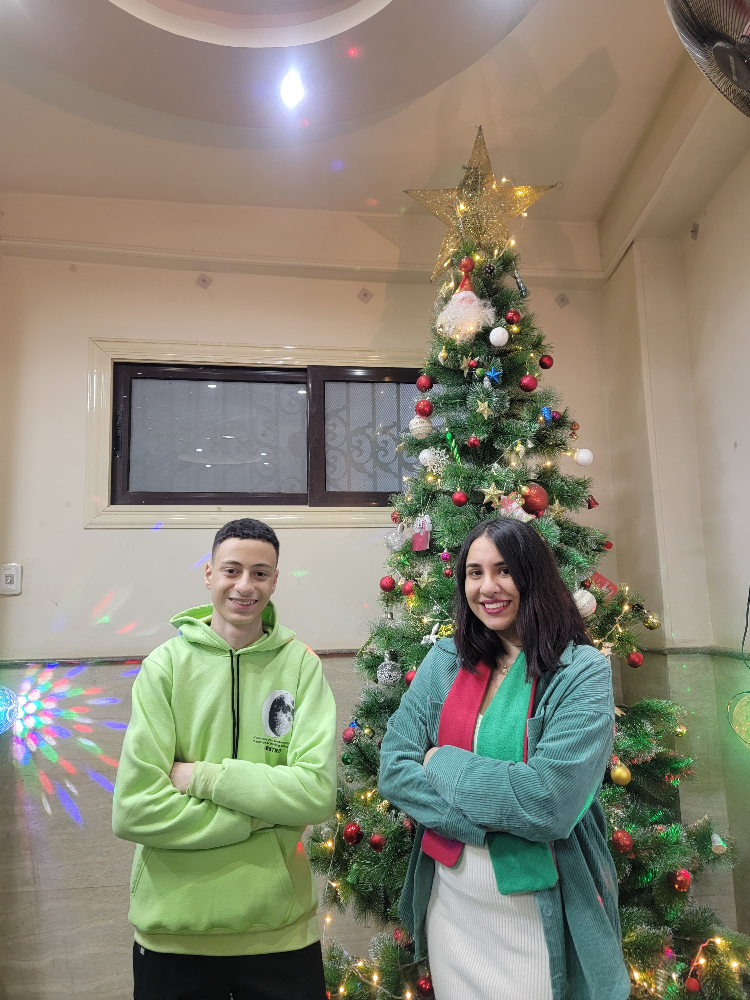

🎉 NARDEN HAMAAM 🎉
kol sana w enty tayeba ya shanawy el ghalaba, w 3o2bal malyon sana bsly tkoun sana mofeeda
shokran 3ala ta3abek ma3ana
🎂🎁 rabena ykhaliky lena ya a7la Miss Nardeen
shokran ya sa7bety

shokran 3ala ta3abek ma3ana
❤️
enty msh bas khadema, enty okht🎂🎁 rabena ykhaliky lena ya a7la Miss Nardeen
shokran ya sa7bety